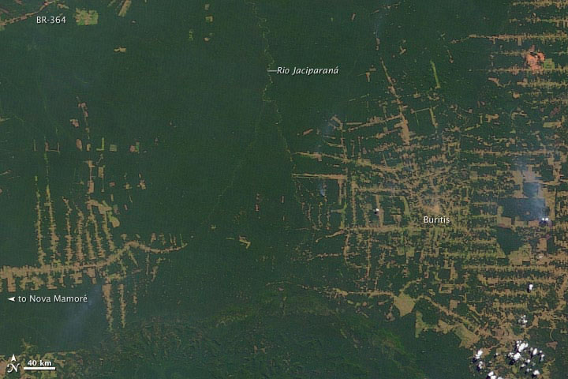
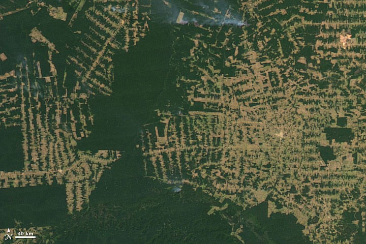
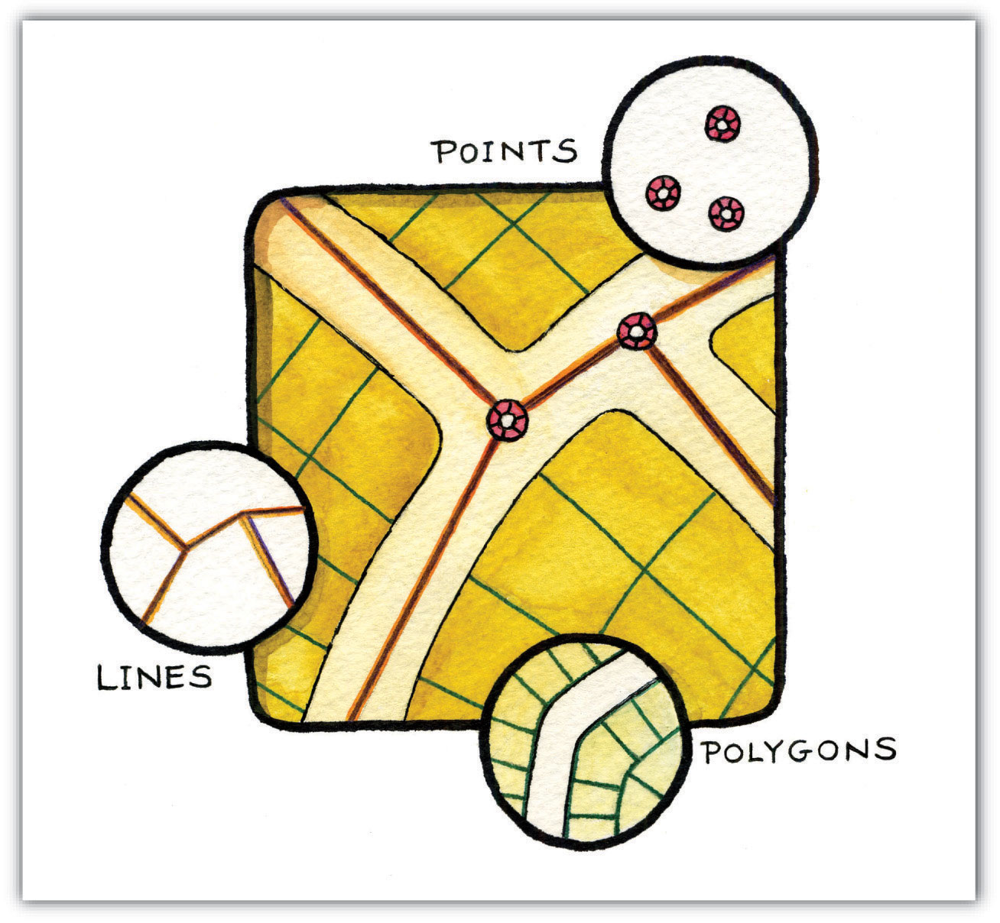
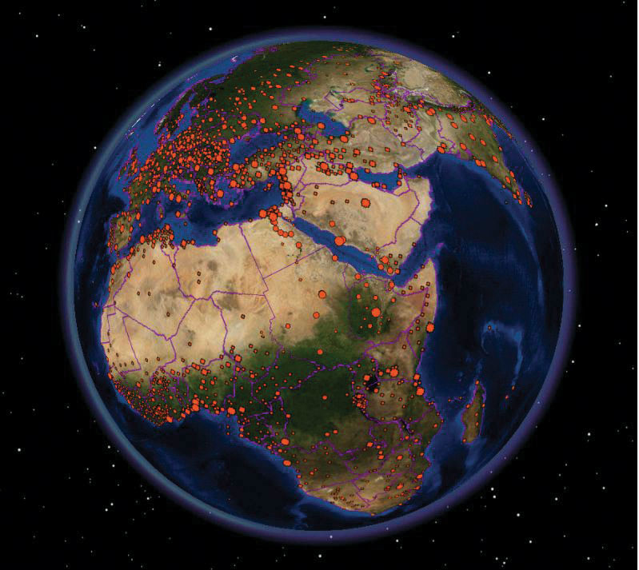
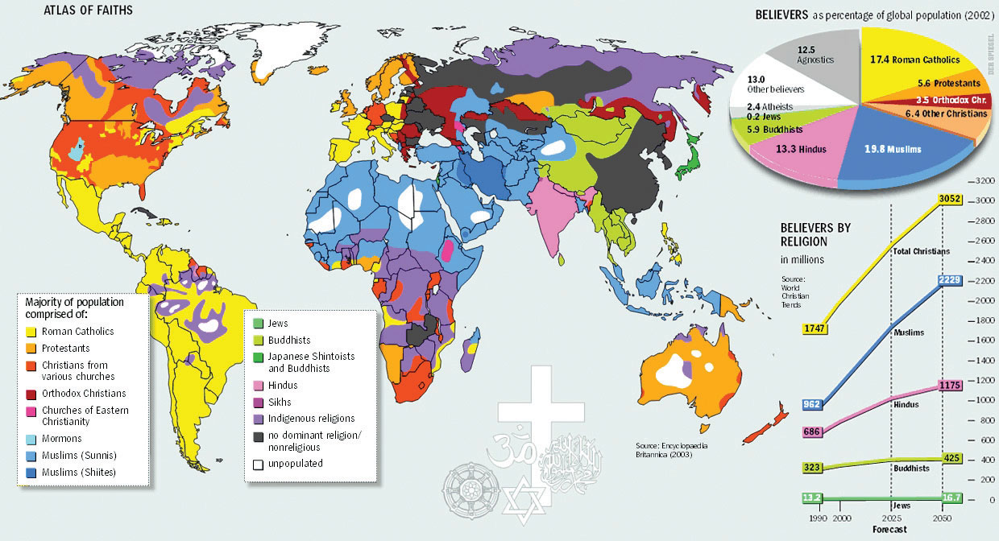
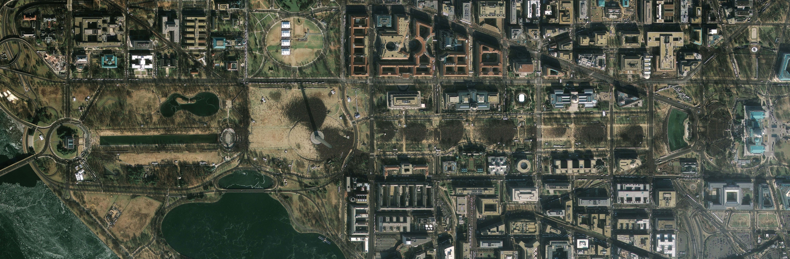

As previously discussed, maps are a representation of the earth. Central to this representation is the reduction of the earth and its features of interest to a manageable size (i.e., map scale) and its transformation into a useful two-dimensional form (i.e., map projection). The choice of both map scale and, to a lesser extent, map projection will influence the content and shape of the map.
In addition to the seemingly objective decisions made behind the choices of map scale and map projection are those concerning what to include and what to omit from the map. The purpose of a map will certainly guide some of these decisions, but other choices may be based on factors such as space limitations, map complexity, and desired accuracy. Furthermore, decisions about how to classify, simplify, or exaggerate features and how to symbolize objects of interest simultaneously fall under the realms of art and science (Slocum et al. 2004).Slocum, T., R. McMaster, F. Kessler, and H. Hugh. 2008. Thematic Cartography and Geovisualization. Upper Saddle River, NJ: Prentice Hall.
The process of moving from the “real world” to the world of maps is referred to as map abstractionThe process by which real-world phenomena are transformed into features on a map.. This process not only involves making choices about how to represent features but also, more important with regard to geographic information systems (GISs), requires us to be explicit, consistent, and precise in terms of defining and describing geographical features of interest. Failure to be explicit, consistent, and precise will return incorrect; inconsistent; and error-prone maps, analyses, and decisions based on such maps and GISs. This final section discusses map abstraction in terms of geographical features and their respective graphical representation.
One of the most pressing environmental issues facing the world is deforestation. Generally, deforestation refers to the reduction of forest area. This is an important issue because it has possible implications for climate change, global warming, biodiversity, and the water balance of the earth, among other things. In the last century, deforestation has increased at an alarming rate and is mostly attributed to human activity. Mapping forests regularly with a GIS is a logical way to monitor deforestation and has the potential to inform policies regarding forest conservation efforts. Easy enough, so let’s get started.
So what exactly is a forest? How do we know where a forest begins and where it ends? How can naturally caused forest fires be differentiated from those started by humans? Can a forest exist in a swamp or wetland? For that matter, what is the difference between a swamp and wetland? Such questions are not trivial in the context of mapping and GISs. In fact, consistent and precise definitions of features like forests or swamps increase the reliability and efficiency of maps, mapping, and analysis with GISs.
Figure 2.12 Deforestation in the Amazon: 2001
Figure 2.13 Deforestation in the Amazon: 2009
Within the realm of maps, cartography, and GISs, the world is made up of various features or entities. Such entities include but are not restricted to fire hydrants, caves, roads, rivers, lakes, hills, valleys, oceans, and the occasional barn. Moreover, such features have a form, and more precisely, a geometric form. For instance, fire hydrants and geysers are considered point-like features; rivers and streams are linear features; and lakes, countries, and forests are areal features.
Features can also be categorized as either discrete or continuous. Discrete featuresPhenomena that when represented on a map have clearly defined boundaries. are well defined and are easy to locate, measure, and count, and their edges or boundaries are readily defined. Examples of discrete features in a city include buildings, roads, traffic signals, and parks. Continuous featuresPhenomena that lack clearly defined boundaries., on the other hand, are less well defined and exist across space. The most commonly cited examples of continuous features are temperature and elevation. Changes in both temperature and elevation tend to be gradual over relatively large areas.
Geographical features also have several characteristics, traits, or attributes that may or may not be of interest. For instance, to continue the deforestation example, determining whether a forest is a rainforest or whether a forest is in a protected park may be important. More general attributes may include measurements such as tree density per acre, average canopy height in meters, or proportions like percent palm trees or invasive species per hectare in the forest.
Notwithstanding the purpose of the map or GIS project at hand, it is critical that definitions of features are clear and remain consistent. Similarly, it is important that the attributes of features are also consistently defined, measured, and reported in order to generate accurate and effective maps in an efficient manner. Defining features and attributes of interest is often an iterative process of trial and error. Being able to associate a feature with a particular geometric form and to determine the feature type are central to map abstraction, facilitate mapping, and the application of GISs.
The shape and content of maps vary according to purpose, need, and resources, among other factors. What is common to most maps, and in particular to those within a GIS, is that they are graphical representations of reality. Put another way, various graphical symbols are used to represent geographical features or entities. Annotation or text is also commonly used on maps and facilitates map interpretation. Learning about map content and map generalization is important because they serve as the building blocks for spatial data that are used within a GIS.
Building upon the previous discussion about the geometric form of geographic features, maps typically rely on three geometric objects: the point, the line, and the polygon or area. A point is defined by x and y coordinates, a line is defined by two points, and a polygon is defined by a minimum of three points. The important thing to note is that the definition of a point is analogous to a location that is defined by longitude and latitude. Furthermore, since lines and polygons are made up of points, location information (i.e., x and y, or longitude and latitude, coordinates) is intrinsic to points, lines, and polygons.
Figure 2.14 Geographic Features as Points, Lines, and Polygons
Both simple and complex maps can be made using these three relatively simple geometric objects. Additionally, by changing the graphical characteristics of each object, an infinite number of mapping possibilities emerge. Such changes can be made to the respective size, shape, color, and patterns of points, lines, and polygons. For instance, different sized points can be used to reflect variations in population size, line color or line size (i.e., thickness) can be used to denote volume or the amount of interaction between locations, and different colors and shapes can be used to reflect different values of interest.
Figure 2.15 Variations in the Graphical Parameters of Points, Lines, and Polygons
Figure 2.16
Complementing the graphical elements described previously is annotation or text. Annotation is used to identify particular geographic features, such as cities, states, bodies of water, or other points of interest. Like the graphical elements, text can be varied according to size, orientation, or color. There are also numerous text fonts and styles that are incorporated into maps. For example, bodies of water are often labeled in italics.
Another map element that deserves to be mentioned and that combines both graphics and text is the map legend or map key. A map legendA common component of a map that facilitiates interpretation and understanding. provides users information about the how geographic information is represented graphically. Legends usually consist of a title that describes the map, as well as the various symbols, colors, and patterns that are used on the map. Such information is often vital to the proper interpretation of a map.
As more features and graphical elements are put on a given map, the need to generalize such features arises. Map generalizationThe process by which real-world features are simplified in order to be represented on a map. refers to the process of resolving conflicts associated with too much detail, too many features, or too much information to map. In particular, generalization can take several forms (Buttenfield and McMaster 1991):Buttenfield, B., and R. McMaster. 1991. Map Generalization. Harlow, England: Longman.
Determining which aspects of generalization to use is largely a matter of personal preference, experience, map purpose, and trial and error. Though there are general guidelines about map generalization, there are no universal standards or requirements with regard to the generalization of maps and mapping. It is at this point that cartographic and artistic license, prejudices and biases, and creativity and design sense—or lack thereof—emerge to shape the map.
Making a map and, more generally, the process of mapping involve a range of decisions and choices. From the selection of the appropriate map scale and map projection to deciding which features to map and to omit, mapping is a complex blend of art and science. In fact, many historical maps are indeed viewed like works of art, and rightly so. Learning about the scale, shape, and content of maps serves to increase our understanding of maps, as well as deepen our appreciation of maps and map making. Ultimately, this increased geographical awareness and appreciation of maps promotes the sound and effective use and application of a GIS.
Image maps, in large part derived from satellites, are ubiquitous. Such maps can be found on the news, the Internet, in your car, and on your mobile phone. What’s more is that such images are in living color and of very high resolution. Not long ago, such image maps from satellites were the sole domain of meteorologists, local weather forecasters, and various government agencies. Public access to such images was pretty much limited to the evening news.
Technological advances in imaging technology, in conjunction with the commercialization of space flight, opened the door for companies like GeoEye (http://www.geoeye.com) and DigitalGlobe (http://www.digitalglobe.com) to provide satellite imagery and maps to the masses at the turn of the twenty-first century. With online mapping services such as Google Earth providing free and user-friendly access to such images, a revolution in maps and mapping was born.
Image maps now provide geographic context for nightly news stories around the world, serve as a backdrop to local real estate searches and driving directions, and are also used for research purposes . The popularity and widespread use of such images speaks not only to recent technological advances and innovations but also, perhaps more important, to the geographer in us all.
Figure 2.17 The Inauguration of Barack Obama from Space
GeoEye 2008.